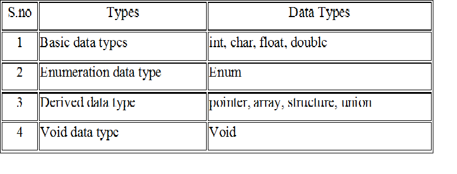
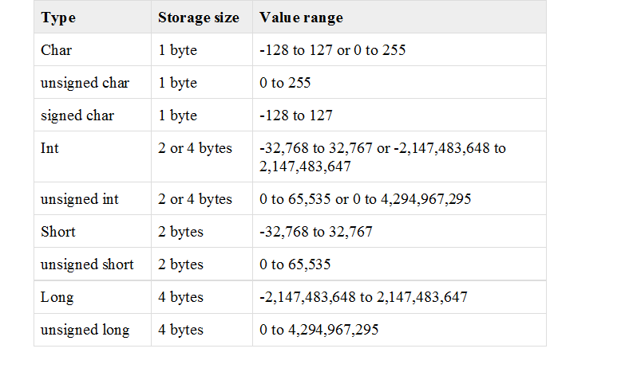
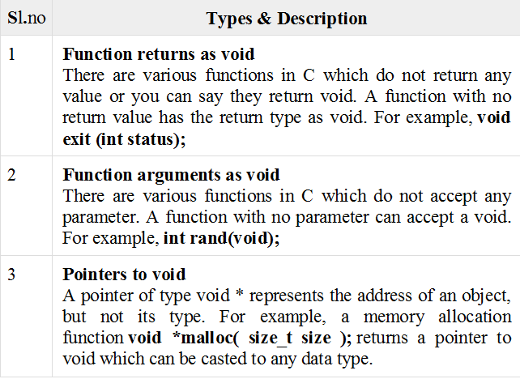

C Data Types
Data types in C
1. Data types are the keywords, which are used for assigning a type to a variable. 2. A data type specifies the type of data that a variable can store such as integer, floating, character etc. 1. Fundamental Data Types 1.1 Integer types 1.2 Floating Type 1.3 Character types 2. Derived Data Types 2.1 Arrays 2.2 Pointers 2.3 Structures 2.4 Enumeration C data types:  Syntax for declaration of a variable: data_type variable_name;1. Basic data types in C:
1.1. Integer data type:
Integer data type allows a variable to store numeric values. Syntax:int var1; “int” keyword is used to refer integer data type. The storage size of int data type is 2 or 4 or 8 byte. It varies depend upon the processor in the CPU that we use. If we are using 16 bit processor, 2 byte (16 bit) of memory will be allocated for int data type. Like wise, 4 byte (32 bit) of memory for 32 bit processor and 8 byte (64 bit) of memory for 64 bit processor is allocated for int datatype. If you want to use the integer value that crosses the above limit, you can go for “long int” and “long long int” for which the limits are very high. The following table provides the details of standard integer types with their storage sizes and value ranges − Character data type:
Character data type allows a variable to store only one character. Storage size of character data type is 1. We can store only one character using character data type. “char” keyword is used to refer character data type. For example, ‘A’ can be stored using char datatype. You can’t store more than one character using char data type.Floating point data type:
Floating point data type consists of 2 types. They are, 1. float 2. double 1. float: Float data type allows a variable to store decimal values. Storage size of float data type is 4. This also varies depend upon the processor in the CPU as “int” data type. We can use up-to 6 digits after decimal using float data type. For example, 10.456789 can be stored in a variable using float data type. 2. double: Double data type is also same as float data type which allows up-to 10 digits after decimal. The range for double datatype is from 1E–37 to 1E+37. The following table provide the details of standard floating-point types with storage sizes and value ranges and their precision −
1.3.1. sizeof() function in C:
sizeof() function is used to find the memory space allocated for each C data types. Example:#include <stdio.h> #include <limits.h> int main() { int a; char b; float c; double d; printf(“Storage size for int data type:%d \n”,sizeof(a)); printf(“Storage size for char data type:%d \n”,sizeof(b)); printf(“Storage size for float data type:%d \n”,sizeof(c)); printf(“Storage size for double data type:%d\n”,sizeof(d)); return 0; }Output: Storage size for int data type:4 Storage size for char data type:1 Storage size for float data type:4 Storage size for double data type:8Enumeration data type in C:
Enumeration data type consists of named integer constants as a list. It start with 0 (zero) by default and value is incremented by 1 for the sequential identifiers in the list. Enum syntax in C: enum identifier [optional{ enumerator-list }]; Enum example in C:enum month { Jan, Feb, Mar }; or /* Jan, Feb and Mar variables will be assigned to 0, 1 and 2 respectively by default */ enum month { Jan = 1, Feb, Mar }; /* Feb and Mar variables will be assigned to 2 and 3 respectively by default */ enum month { Jan = 20, Feb, Mar }; /* Jan is assigned to 20. Feb and Mar variables will be assigned to 21 and 22 respectively by default */ The above enum functionality can also be implemented by “#define” preprocessor directive as given below. #define Jan 20; #define Feb 21; #define Mar 22; C – enum example program:#include <stdio.h> int main() { enum MONTH { Jan = 0, Feb, Mar }; enum MONTH month = Mar; if(month == 0) printf(“Value of Jan”); else if(month == 1) printf(“Month is Feb”); if(month == 2) printf(“Month is Mar”); }Output: Month is MarchDerived data type in C:
Array, pointer, structure and union are called derived data type in C language. We will see this in next topics: “C – Array“ , “C – Pointer” , “C – Structure” and “C – Union” 4. Void data type in C: Void is an empty data type that has no value. This can be used in functions and pointers. Qualifiers
Qualifiers alters the meaning of base data types to yield a new data type. Size qualifiers: Size qualifiers alters the size of basic data type. The keywords long and short are two size qualifiers. For example: long int i; The size of int is either 2 bytes or 4 bytes but, when long keyword is used, that variable will be either be 4 bytes or 8 bytes. If the larger size of variable is not needed then, short keyword can be used in similar manner as long keyword. Sign qualifiers: Whether a variable can hold only positive value or both values is specified by sign qualifiers. Keywords signed and unsigned are used for sign qualifiers. unsigned int a; unsigned variable can hold zero and positive values only It is not necessary to define variable using keyword signed because, a variable is signed by default. Sign qualifiers can be applied to only int and char data types. For a int variable of size 4 bytes it can hold data from -231 to 231-1 but, if that variable is defined unsigned, it can hold data from 0 to 232 -1. Constant qualifiers Constant qualifiers can be declared with keyword const. An object declared by const cannot be modified. const int p=20; The value of p cannot be changed in the program. Volatile qualifiers: A variable should be declared volatile whenever its value can be changed by some external sources outside program. Keyword volatile is used to indicate volatile variable.